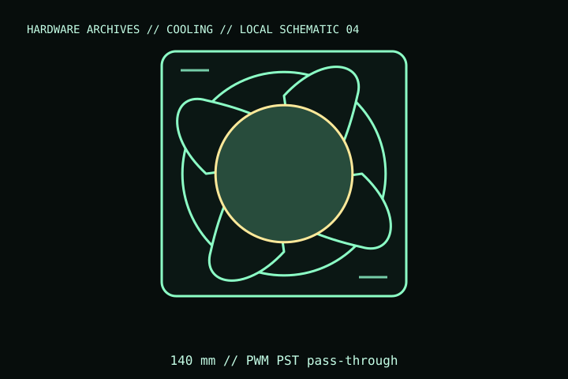

[ INDIVIDUAL COMPONENT // COOLING ]
ARCTIC P14 PWM PST
ARCTIC’s 140 mm P14 PWM PST fan, with a 27 mm frame and a PWM sharing output. This is the standard black 12 V P14 PWM PST model, not an A-RGB, Max, or CO variant.

IDENTIFICATION: Match the complete model name, suffix, article number, bundle, revision, and host manual to the physical label before installation. Similar product names and variants may use different wiring or dimensions.
Specifications
| Catalog subcategory | Case and radiator fans |
|---|---|
| Exact model | P14 PWM PST, black, 12 V; ARCTIC article ACFAN00125A |
| Frame and thickness | 140 × 140 × 27 mm |
| Speed / control | 200–1,700 rpm; 4-pin PWM input with PST 4-pin fan-sharing output |
| Electrical rating | 12 V DC; maximum current 0.12 A; maximum input power 1.44 W |
| Mount / host fit | 140 mm mount; account for 27 mm frame and confirm header current when sharing multiple fans. |
Compatibility, installation & service
- Confirm a 140 mm fan position and 27 mm depth. PST can pass the PWM fan signal/power onward, but every downstream fan’s current counts toward the source header limit.
- Check whether the control header is PWM-capable; voltage-controlled DC headers may not provide the intended control range.
- Verify screw length, airflow direction, filter clearance, and radiator manufacturer guidance.
Service notes
Unplug before cleaning and hold the rotor still. Inspect PST connectors for secure seating and avoid pulling on the daisy-chain cable.
Manufacturer references
- ARCTIC — P14 PWM PSTManufacturer product page for the exact article number and technical data.
- ARCTIC — SupportManufacturer manuals and product support.
Verify fit, wiring, and ratings against the manufacturer document for the exact unit and host. This catalog record is an identification aid, not a compatibility guarantee.